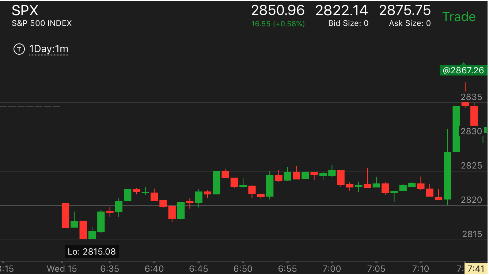
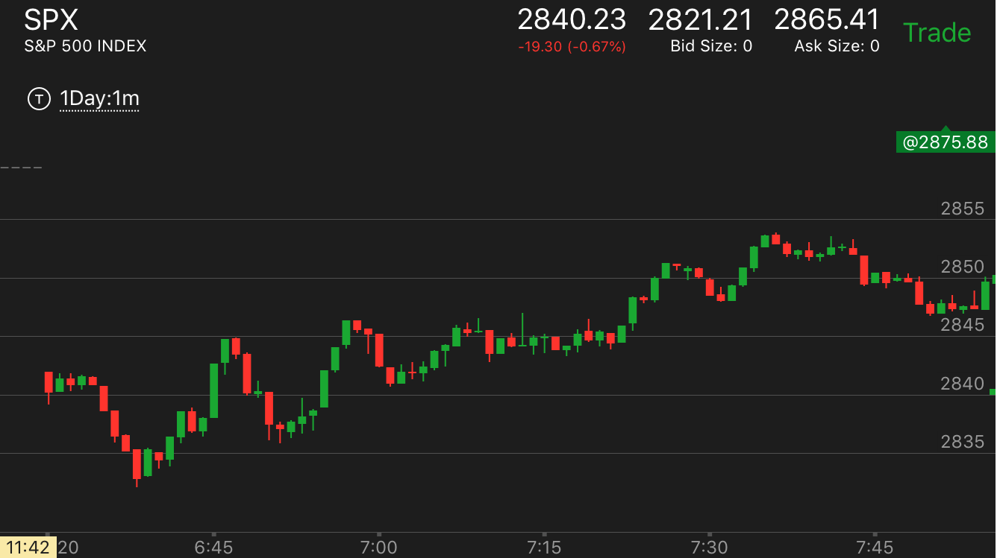
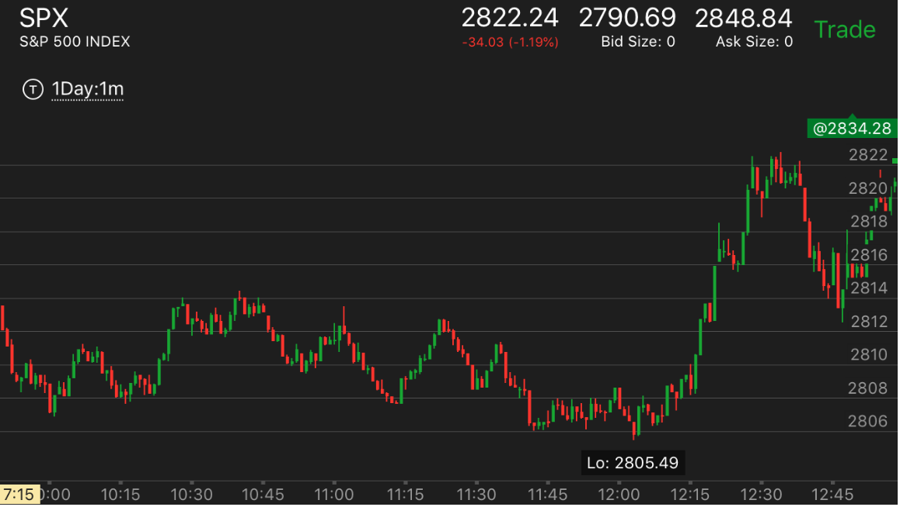

跨越关键的时候，不断拉回，非常缓慢，最后爆发
- 一般分为三段，第一段，快速上涨后，拉回，低于关键点，第二段再次上涨，再次拉回。和关键点打平。
第三段，再次上涨，拉回后，刚刚高于关键点，这时，大盘开始大涨，一旦大涨，是一个非常强的涨势。下跌也有类似的例子。

图示:
1。开盘后，三个bar，下跌。这个可以看作是一个非常小的两段下跌走势。因为这个和连续下跌不同。第二个bar是停顿了一下的。
不过这个不能说明什么问题。然后大盘开始上涨，越过开盘高点后，立刻拉回，低于开盘高点。这个开盘高点就是关键点。
再次冲高。再次拉回。这时它刚刚高于开盘点。再次冲高。这次冲高在高处时间比较久。再次下来后，是个两段走势。
再次停留在开盘的关键点。这时可以分析，它不断的跨越开盘高点，不断的拉回。不是一个两段走势见顶的样子。而它上涨如此艰难。
时间很长。上涨花了40分钟的时间。而下跌只用了3分钟。说明未来要大涨。

图示:
1。8：20连续下跌，速度并不快，但是是连续下跌。它的反弹一开始很快，然后走平，或者拉回。很久时间也没有离开2845这个下跌的关键点。
说明会大涨。它在这里的时间也远远多于下跌的时间。

图示:开盘后，走平，然后快速下跌。它的反弹速度也不慢。但是还是比下跌的慢。它冲高后，立刻拉回，
再次冲高，再次拉回。第二次拉回稍微高于开盘的走平点。这么长时间，都在开盘走平点震荡。higher high说明腰涨，而上涨时间很长，
也说明了会继续上涨。

图示：2:20出现了三段下跌转折。它开始反弹的时候，始终在2404这个关键点附近打转。在这里徘徊了很久。
这个说明了一个升势的开始。一旦爆发就，不会轻易结束。所以应该紧紧拿住

图示：前面下跌的时候，不断反弹。11：40下跌后，反弹很小。基本走平，然后冲高后，下跌。
然后出现了缓慢的上涨，不断拉回的走势。12：00的下跌只用了3分钟。而且它超过2809这个点，用了10分钟。所以它会大涨。